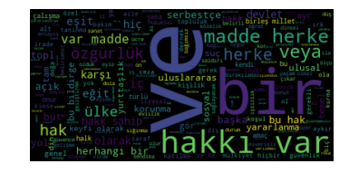

Veri Defteri
Hakkımızda
Veri Defteri
Veri Bilimi ve Yapay Öğrenme
Categories
All
(44)
Başlangıç
(12)
Bilimsel Programlama
(4)
Genel
(7)
Jupyter
(1)
LightGBM
(1)
Python Programlamaya Giriş
(23)
cepyayını
(1)
derin öğrenme
(1)
metin işleme
(1)
pandas
(3)
veri setleri
(4)
veri önişleme
(3)
yapay öğrenme
(4)
Binder ile Jupyter defterleri paylaşmak
Genel
Diyelim bir programlama eğitimi veriyorsunuz. Herkesin kullanması için bir Jupyter defteri hazırladınız. Katılımcılar bu defter üzerinde değişiklik yapacaklar, alıştırma…
Kaan Öztürk
Feb 3, 2020
Bilimsel Programlamaya Kolay Başlangıç - 4
Bilimsel Programlama
Yazı dizimizin bir önceki bölümünde
numpy
kullanımına basit bir giriş yapmıştık, şimdi ise daha ileri matematiksel yöntemleri içeren
scipy
’a bir göz atalım. Yapmaya çalıştığımız “ivmenin nümerik integrasyonu” işi, aslında bir “ikinci derece diferansiyel denklem çözümü” ile eşdeğer. Konumun zamana göre ikinci…
Egemen İmre
Mar 4, 2019
Bilimsel Programlamaya Kolay Başlangıç - 3
Bilimsel Programlama
Bilimsel Programlama’ya Kolay Başlangıç serisinin ilk yazısında Hazırlık…
Egemen İmre
Mar 1, 2019
Keras ile Derin Öğrenmeye Giriş
Başlangıç
derin öğrenme
yapay öğrenme
Derin öğrenme son zamanlarda yapay öğrenme alanındaki en popüler konulardan biri. AlphaGo adlı bir bilgisayar programının kısa vadede çözülemeyeceği iddia edilen Go oyununda…
Birol Yüceoğlu
Feb 6, 2019
Bilimsel Programlamaya Kolay Başlangıç - 2
Bilimsel Programlama
Bilimsel Programlamaya Kolay Başlangıç serisinin ilk yazısında sadece grafikler için
matplotlib
kütüphanesini kullanarak serbest düşüş problemini modellemiş ve sonuçları grafiklerle görselleştirmiştik. Vesileyle…
Egemen İmre
Sep 3, 2018
Bilimsel Programlamaya Kolay Başlangıç - 1
Bilimsel Programlama
Bilimsel Programlamaya Kolay Başlangıç gibi bir seri oluşturma fikri, öğrencilerin bir problemi çözmek için yaklaşım geliştirmekte ne…
Egemen İmre
Aug 29, 2018
Python Programlamaya Giriş 23 - Modüller ve paketler
Python Programlamaya Giriş
Her programlama dilinde olduğu gibi Python’da da tekrar tekrar kullanılabilen fonksiyon ve sınıfların bir kütüphane şeklinde ayrı dosyalarda saklanması ve yeni yazılan…
Kaan Öztürk
Jul 25, 2018
Python Programlamaya Giriş 22 - Hata yakalama, try/except
Python Programlamaya Giriş
Hata yakalama (exception handling) beklenmedik durumlarda programınızın bir hata mesajı vermesi ve çalışmayı durdurması yerine, hataya kendi istediğimiz şekilde cevap…
Kaan Öztürk
Jun 25, 2018
Python Programlamaya Giriş 21 - Dinamik kod üretme
Python Programlamaya Giriş
Python
dinamik
tabir edilen dillerden biridir. Programda kullandığıız değişkenlerin tiplerini baştan bildirmeniz gerekmez. Program çalıştıkça işlenen…
Kaan Öztürk
Jun 8, 2018
LightGBM’e Giriş
Başlangıç
LightGBM
veri setleri
yapay öğrenme
Bu yazımızda Microsoft tarafından hazırlanan ve Kaggle gibi platformlarda oldukça popülerleşen LightGBM kütüphanesini tanıtacağız.
LightGBM
kullanımı artan gradient boosting yöntemini kullanan bir kütüphane. Gradient Boosting yöntemini kullanan başka…
Birol Yüceoğlu
May 22, 2018
Python Programlamaya Giriş 20 - Dosya okuma ve yazma
Python Programlamaya Giriş
Yaz…
Kaan Öztürk
Apr 11, 2018
pandas’a Giriş - Veri Çerçeveleri
Başlangıç
pandas
veri önişleme
Pandas
ile ilgili bu yazımızda veri çerçevesi (
DataFrame
) isimli veri yapısını ele alacağız. Önceki yazımızda etiketli verilerden oluşan serileri görmüştük. Seriler tek boyutlu bir veri yapısıyken, veri çerçevelerini her sütunu bir seriden oluşan iki boyutlu bir matris olarak düşünebiliriz. Serilerde bahsettiğimiz…
Birol Yüceoğlu
Mar 30, 2018
Python Programlamaya Giriş 19 - Liste kurma, sözlük kurma, üreteç ifadeler
Python Programlamaya Giriş
Python’da yeni bir liste oluşturmak için, boş bir listeden başlayabiliriz ve bir döngü içinde
append()
metoduyla…
Kaan Öztürk
Mar 24, 2018
Weather Underground API
Başlangıç
Genel
veri setleri
Önceki yazılarımızda Star Wars ve FourSquare için uygulama ara yüzlerini (API, Application Programming Interface) kullanmayı görmüştük. API’ları kullanarak çeşitli kaynaktan verilere erişmek, bu verilerle uygulama…
Birol Yüceoğlu
Mar 22, 2018
Python Programlamaya Giriş 18 - Python referans modeli, sığ ve derin kopyalama
Python Programlamaya Giriş
Python Programlamaya Giriş yazı…
Kaan Öztürk
Mar 19, 2018
Python Programlamaya Giriş 17 - Küme metodları
Python Programlamaya Giriş
Python programlamaya giriş konulu yazı dizimizdeki son birkaç bölümde, Python’da tanımlı…
Kaan Öztürk
Mar 9, 2018
pandas’a Giriş - Seriler
Başlangıç
Genel
pandas
veri önişleme
Pandas
veri analitiği alanında, özellikle veri işleme ve analizi için sıklıkla kullanılan bir Python paketi.
Pandas
paketi seri (
Series
) ve veri çerçevesi (
DataFrame
) isimli iki veri yapısının üzerine kurulmuş. Bunlardan serileri tek boyutlu diziler, veri çerçevelerini ise iki boyutlu matrisler (ya da her kolonu bir seriden oluşan yapı)…
Birol Yüceoğlu
Mar 1, 2018
Python Programlamaya Giriş 16 - Dize Biçimlendirme
Python Programlamaya Giriş
Python Programlamaya Giriş
dizimizin bir önceki bölümünde dizelerle yapılabilecek işlemleri ve yaygın dize metodlarını özetledik. Bu yazıda dize metodlarından biri olan
f…
Kaan Öztürk
Feb 23, 2018
Python Programlamaya Giriş 15 - Dize Metodları
Python Programlamaya Giriş
Python programlamaya giriş yazı dizimizin…
Kaan Öztürk
Feb 17, 2018
Python Programlamaya Giriş 14 - Sözlük Metodları
Python Programlamaya Giriş
Python’daki veri tiplerini daha önce kısaca ele almıştık; bir önceki bölümde de liste tipine ait metodların…
Kaan Öztürk
Feb 3, 2018
Python Programlamaya Giriş 13 - Liste Metodları
Python Programlamaya Giriş
Yazı dizimizin önceki bir bölümünde Python’un öntanımlı veri tiplerini yüzeysel bir şekilde işlemiştik. Bu yazıda ve takip eden…
Kaan Öztürk
Jan 30, 2018
Python Programlamaya Giriş 12 - Sıralı Nesnelerle İşlemler
Python Programlamaya Giriş
Daha önceki bir bölümde Python’daki liste, çokuz, dize ve sözlük tiplerinin nasıl…
Kaan Öztürk
Jan 26, 2018
Foursquare API
Başlangıç
Genel
veri setleri
İnternet üzerindeki açık veri kaynakları, bu verileri kullanan uygulamalar geliştirmek isteyenler ya da üzerinde çalıştıkları problemlere farklı alanlardan derledikleri…
Birol Yüceoğlu
Jan 23, 2018
Python Programlamaya Giriş 11 - İsimsiz Fonksiyonlar
Python Programlamaya Giriş
Python Programlamaya Giriş yazı dizimizde Python fonksiyonlarının nasıl tanımlandığını, parametre eşleştirmenin ve varsayılan parametrelerin nasıl işlediğini gördük, çeşitli örnekler ve alıştırmalar işledik. Dizinin bütün yazılarına…
Kaan Öztürk
Jan 19, 2018
Python Programlamaya Giriş 10 - Fonksiyon Alıştırmaları
Python Programlamaya Giriş
Python fonksiyonlarının uygulamalarının ardından, şimdi kendiniz uygulayabileceğiniz birkaç fonksiyon alıştırması verelim. Çözümleri bulmak size ait. Buradaki alıştırmaların…
Kaan Öztürk
Jan 14, 2018
Python Programlamaya Giriş 9 - Fonksiyonlara örnekler
Python Programlamaya Giriş
Python Programlamaya Giriş yazı dizimizde Python fonksiyonlarının nasıl tanımlandığını, parametre eşleştirmenin ve varsayılan parametrelerin nasıl işlediğini gördük. Dizinin bütün yazılarına…
Kaan Öztürk
Jan 13, 2018
Python Programlamaya Giriş 8 - Fonksiyon parametreleri
Python Programlamaya Giriş
Python Programlamaya Giriş yazı dizimize Python fonksiyonlarının temelleriyle devam ediyoruz. Dizinin bütün yazılarına erişmek için
Python Programlamaya Giriş
kategorimize bakabilirsiniz. Bu dizideki yazılar ayrıca Jupyter…
Kaan Öztürk
Jan 10, 2018
Python Programlamaya Giriş 7 - Fonksiyonlar
Python Programlamaya Giriş
Python Programlamaya Giriş yazı dizimize Python fonksiyonlarının temelleriyle devam ediyoruz. Dizinin bütün yazılarına erişmek için
Python Programlamaya Giriş
kategorimize bakabilirsiniz. Bu dizideki yazılar ayrıca Jupyter…
Kaan Öztürk
Jan 6, 2018
Python Programlamaya Giriş 6 - Döngü Alıştırmaları
Python Programlamaya Giriş
Python Programlamaya Giriş yazı dizimizin bir önceki bölümünde döngü yapılarını kullanarak bazı hesaplama problemlerini nasıl çözeceğimizi görmüştük.…
Kaan Öztürk
Dec 30, 2017
Python Programlamaya Giriş 5 - Döngülerle Problem Çözme
Python Programlamaya Giriş
Python Programlamaya Giriş yazı dizimizin bir önceki bölümünde döngüleri nasıl kullanacağımızı gördük. Programların temel yapı taşı olan döngüleri hemen hemen her programda…
Kaan Öztürk
Dec 26, 2017
Python Programlamaya Giriş 4 - Döngüler
Python Programlamaya Giriş
Python programlamanın temellerini anlattığımız yazı dizimizin bu bölümünde belli bir kod blokunun tekrar tekrar çalıştırılması anlamına gelen
döngülerden
bahsedeceğiz. Döngüler her türlü programın…
Kaan Öztürk
Dec 20, 2017
Python Programlamaya Giriş 3 - Seçim yapma, Mantık İşlemleri, Karşılaştırmalar
Python Programlamaya Giriş
Yeni başlayanlar için Python programlama temellerini işlediğimiz yazı dizimizin bu bölümünde karar verme yapısından bahsedeceğiz.
Kaan Öztürk
Dec 16, 2017
Python Programlamaya Giriş 2 - Sayılar, Aritmetik, Temel Veri Yapıları
Python Programlamaya Giriş
Yeni başlayanlar için…
Kaan Öztürk
Dec 11, 2017
Python Programlamaya Giriş 1 - İlk adımlar
Python Programlamaya Giriş
Bu yazıyla, yeni başlayanlara Python programlama dilini öğreten bir yazı dizisine…
Kaan Öztürk
Dec 8, 2017
Jupyter / IPython sihirli ifadeler
Jupyter
Jupyter Jupyter olmadan önce (yani birçok farklı dil çekirdeğiyle uyumlu bir arayüz haline gelmeden önce)
IPython Notebook
olarak biliniyordu. IPython bir Python yorumlayıcısı, ama özellikle etkileşimli sayısal hesaplamalar gözetilerek hazırlanmış bir yorumlayıcı. Başta sadece terminalde…
Kaan Öztürk
Nov 28, 2017
scikit-learn ile Veri Analitiğine Giriş
Başlangıç
yapay öğrenme
Veri bilimine ilgi duyuyorsunuz ancak nereden başlayacağınız konusunda kafanız karışık mı? Python ekosistemi hakkında bilginiz var. Jupyter Notebook ile aranız fena değil. Sırada elinizi kirletmek var. Bunu…
Birol Yüceoğlu
Nov 23, 2017

Türkçe Metin İşlemede İlk Adımlar
Başlangıç
Genel
metin işleme
Veri bilimine merak salan hemen hemen herkes bir noktada metin işlemeye bulaşır. Kitapların incelenmesinden tutun da, sosyal medyada yazılanları derlemeye kadar pek çok…
İlker Birbil
Nov 20, 2017
Muhabbet Teorisi - Algoritmalara güvenebilir miyiz?
cepyayını
Geçtiğimiz Salı akşamı, haftalık Muhabbet Teorisi cep yayınının 91. bölümünde İlker Birbil ve Kaan Öztürk yapay öğrenme algoritmalarını konuştu. Yapay zeka ve öğrenme…
Kaan Öztürk
Nov 17, 2017
[TODO] Jupyter Notebook - R ve Julia
Başlangıç
Genel
İlker Birbil
Nov 12, 2017
Aşırı Öğrenme ve Eksik Öğrenme
yapay öğrenme
Makine öğrenmesi uygulamalarında temel amaç eldeki veriden örüntüler öğrenmek, bu örüntüleri kullanarak değer oluşturmaktır. Örnek olarak müşterilerin özelliklerine bakarak…
Birol Yüceoğlu
Nov 7, 2017
Yeni başlayanlar için veri kümeleri : Çiçekler, bebekler, filmler
Başlangıç
veri setleri
Veri analizine yeni başladınız diyelim. Gayretlisiniz, R, Python, pandas, SQL, ne bulursanız öğrenmeye çalışıyorsunuz. Malum, en iyi öğrenme yaparak öğrenmedir. Oysa…
Kaan Öztürk
Nov 3, 2017
Veri Bilimciler İçin Python Ekosistemi
Başlangıç
Veri bilimi deyince bugün akla ilk gelen programlama dillerinden biri Python. Python 1996’da doğdu, ama uzun zaman bilimsel uygulamalarda…
Kaan Öztürk
Oct 30, 2017
Jupyter Notebook
nedir?
Başlangıç
Genel
Kısa cevap: Oldukça yararlı bir şeydir. Uzun cevap…
İlker Birbil
Oct 30, 2017
Groupby
pandas
veri önişleme
Pandas paketi veri analizi ve işlemesi için hazırlanmış bir Python paketidir. Bu paket çeşitli formatlardaki dosyaları (Excel, Csv, Txt gibi) okumayı, bu formatlarda…
Birol Yüceoğlu
Oct 30, 2017
No matching items